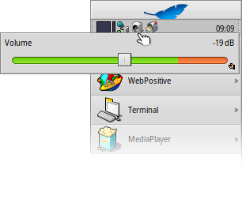
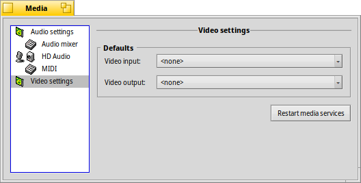

| Índice |
|
Ajustes de audio Mezclador de audio Audio HD MIDI Ajustes de video |
 Media
Media
| Barra de escritorio: | ||
| Ubicación: | /boot/system/preferences/Media | |
| Configuraciones: | ~/config/settings/Media/* ~/config/settings/System Audio Mixer ~/config/settings/MediaPrefs Settings - Almacena la posición de la ventana del panel. |
El panel de preferencias de medios controla los ajustes de audio y video del sistema. Estos incluyen desde tareas cotidianas como ajustar el volumen a ajustes de bajo nivel que la mayoría de los usuarios rara vez necesitarán. Cada uno de estos ajustes se agrupan en categorías.
 Ajustes de audio
Ajustes de audio

En caso de que su equipo posea más de una interfaz de audio, podrá elegir cuál de ellas usar como y , y qué usar. En el caso poco frecuente de que algo en el audio o video de su sistema deje de funcionar correctamente, puede .
Con la casilla de verificación a su lado puede . Esa opción mostrará un icono en la bandeja de la barra de escritorio:
Hacer clic izquierdo sobre el icono de la bandeja abre un deslizador de volumen que controla la salida maestra. Otra forma de cambiar el volumen es usar la rueda del ratón con el puntero posicionado sobre el icono. Como puede observar, con el Manipulador de replicante en la esquina inferior derecha, puede colocar este deslizador, por ejemplo, en el escritorio.
Haciendo clic derecho sobre el icono se abre un menú con atajos a las , y para abrir .
Mezclador de audio
El mezclador de audio le permitirá controlar el volumen de las diferentes transmisiones de audio en el sistema, por ejemplo, la salida de audio de las aplicaciones actualmente en ejecución.

Aquí podemos observar la salida maestra, los deslizadores de volumen de MediaPlayer que está en ejecución y un juego que está usando SDL Audio. Con esos deslizadores puede mezclar sus salidas de audio de forma que, por ejemplo, el sonido del juego no tape la música que está reproduciéndose desde una lista de reproducción de MediaPlayer.
Los "botones dobles" de los deslizadores representan la salida estéreo izquierda y derecha. En condiciones normales se mueven al unísono, pero puede controlar el balance al mover uno de ellos con el botón derecho del ratón.
Utilice la casilla de verificación para una transmisión.
La pestaña contiene mayormente ajustes de bajo nivel:

Entre todos estos parámetros de afinación de bajo nivel —que problemente sólo experimentaría con ellos si Haiku no soporta adecuadamente su hardware de audio fuera de lo establecido— hay unos pocos ajustes que podrían ser de interés.
| Da un poco más de espacio para evitar cortes de audio. | ||
| Muestra un deslizador de balance debajo de los deslizadores de volumen en la pestaña en lugar de los "botones dobles". | ||
| Abre nuevas pestañas para asignar un canal a otro u otros y ajustar sus volúmenes. Por ejemplo, puede asignar el canal de salida izquierdo a front-left, rear-left y center y establecer volúmenes distintos. | ||
| Tiene unas opciones para (menor consumo de CPU y menor latencia) y (consumo de CPU y latencia ligeramente mayores). |
HD audio (el nombre depende del dispositivo)
Controla la salida y entrada física, cuando el mezclador de audio se ocupa de las diferentes transmisiones de audio en curso en Haiku.

Hay tres pestañas:
| permite configurar la y la . | ||
| permite configurar los niveles de salida para los parlantes y auriculares. | ||
| permite configurar los niveles de entrada para los cables de entrada y los micrófonos. |
Hay que decir que estos ajustes a nivel de dispositivo pueden parecer un poco desordenados…
Haiku examina el dispositivo e intenta buscarle sentido a lo que recibe. Puede que se vea con varios deslizadores duplicados con la misma etiqueta, etc. Tendrá que experimentar un poco para encontrar aquello que está buscando.
MIDI
En los ajustes de MIDI se pueden ver todas las fuentes de sonido instaladas, por ejemplo, definiciones de instrumentos. Para elegir una de ellas basta con seleccionar la deseada. Además, al hacer doble clic sobre una entrada abre su carpeta contenedora.

Podrá encontrar algunas fuentes de sonido en HaikuDepot, una vez instaladas aparecerán automáticamente. Las fuentes de sonido instaladas desde la web deben ser movidas manualmente a /boot/system/non-packaged/data/synth/ (o la ruta equivalente en la jerarquía de Home, véase al respecto el tema Disposición del sistema de archivos).
Ajustes de video

Dependiendo de sus dispositivos y el soporte de controladores, puede elegir la y la .
Al igual que con la sección de configuración de audio, hacer clic en puede solucionar pequeños inconvenientes.